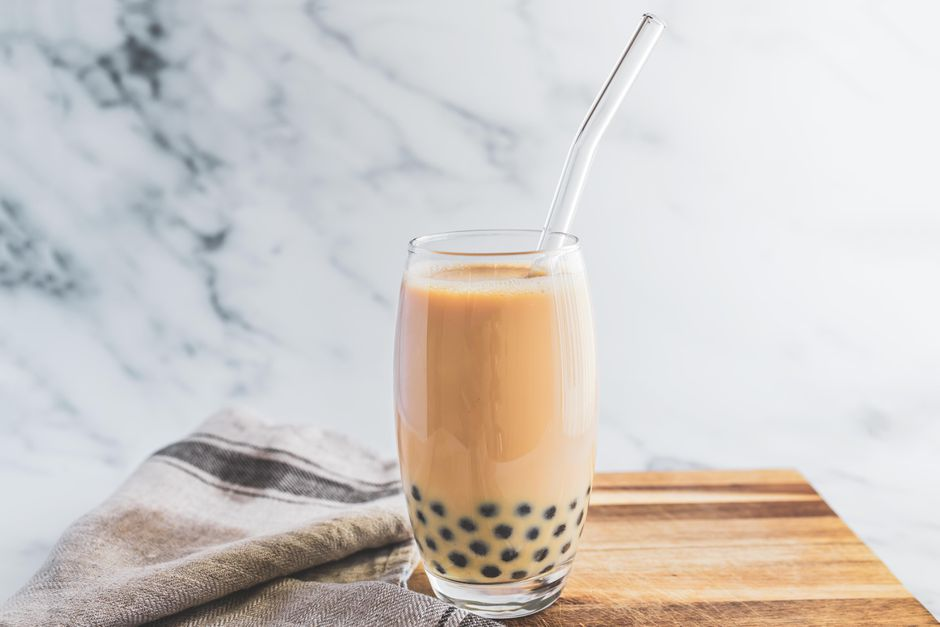

World's Best Boba Recipe

Description
Bubble tea is a popular drink invented in Taiwan in the 1980s.
Called zhen zhu nai cha in Mandarin—which literally translates
to pearl milk tea—the beverage gets its name from the chewy
tapioca, or bubbles (boba if you're from the West Coast),
that are mixed in.
If you love going out for bubble tea, you can use this easy recipe
to make a batch of your own at home. It'll not only save you money
but going the DIY route will allow you to flavor the tea to your
liking. A classic version calls for black tea, milk, syrup, and
tapioca, but you can reduce the amount of sugar or use soy or
almond milk in place of regular dairy.
Ingredients
For the Syrup:
- 3 cups water
- 2 cups granulated sugar
- 1 cup brown sugar
For the Tapioca Pearls:
- 5 cups water
- 1 cup tapioca pearls
- For the Tea:
For the Tea:
- 3 ounces tapioca pearls
- 1 cup cooled brewed tea
- 1/4 cup milk, or to taste
- 4 large ice cubes
Steps
- Boil the water in a large pot. Add the pearls and boil
for 30 minutes. Stir occasionally to make sure the pearls
are not sticking to each other or to the pot.
- Turn off the heat and let the pearls steep in the water
for another 30 minutes with the lid on.
- Place them in the sugar syrup. Make sure that the pearls are
covered and stir the pearls well.